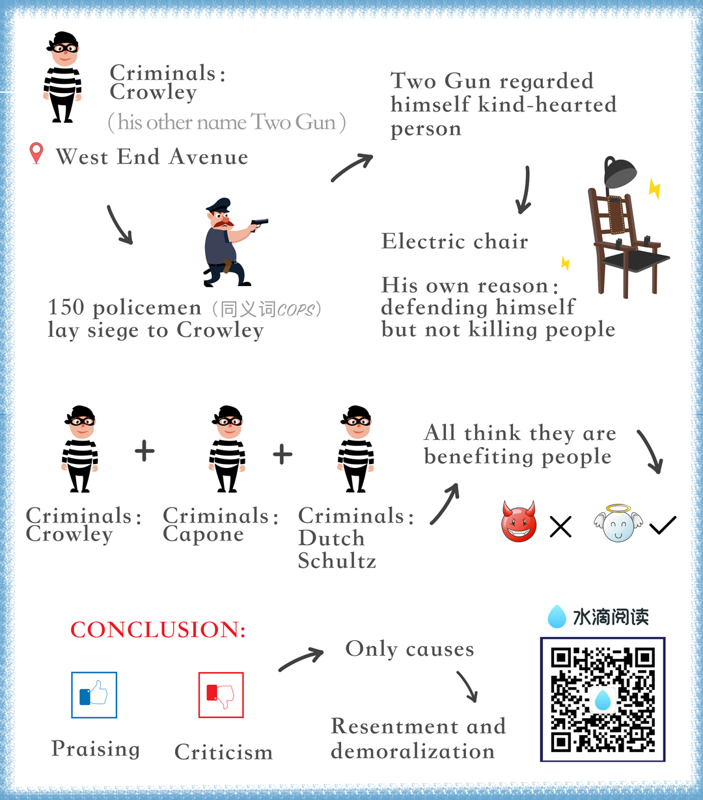

chapter1.1
On May 7, 1931, the most sensational manhunt New York City had ever known had come to its climax.

After weeks of search, "Two Gun" Crowley—the killer, the gunman who didn't smoke or drink was at bay, trapped in his sweetheart's apartment on West End Avenue.
One hundred and fifty policemen and detectives laid siege to his top floor hide way.
They chopped holes in the roof; they tried to smoke out Crowley, the"cop killer," with teargas.
Then they mounted their machine guns on surrounding buildings, and for more than an hour one of New York's fine residential areas reverberated with the crack of pistol fire and the rut-tat-tat of machine guns.
Crowley, crouching behind an over-stuffed chair, fired incessantly at the police.
Ten thousand excited people watched the battle.
Nothing like it ever been seen before on the sidewalks of New York.
When Crowley was captured, PoliceCommissioner E. P. Mulrooney declared that the two-gun desperado was one of the most dangerous criminals ever encountered in the history of New York.
"He will kill," said the Commissioner,"at the drop of a feather."
But how did "Two Gun" Crowley regard himself?
We know, because while the police were firing into his apartment, he wrote a letter addressed "To whom it may concern," and, as he wrote, the blood flowing from his wounds left a crimson trail on the paper.
In this letter Crowley said: "Under my coat is a weary heart, but a kind one—one that would do nobody any harm."
A short time before this, Crowley had been having a necking party with his girlfriend on a country road out on Long Island.
Suddenly a policeman walked up to the car and said: "Let me see your license."
Without saying a word, Crowley drew his gun and cut the policeman down with a shower of lead.
As the dying officer fell, Crowley leaped out of the car, grabbed the officer's revolver, and fired another bullet into the prostrate body.
And that was the killer who said: "Under my coat is a weary heart, but a kind one—one that would do nobody any harm."
Crowley was sentenced to the electric chair.
When he arrived at the death house in Sing Sing, did he say, "This is what I get for killing people"?
No, he said: "This is what I get for defending myself."
The point of the story is this: "Two Gun" Crowley didn't blame himself for anything.
Is that an unusual attitude among criminals?
If you think so, listen to this: "I have spent the best years of my life giving people the lighter pleasures, helping them have a good time, and all I get is abuse, the existence of a hunted man."
That's Al Capone speaking.
Yes, America's most notorious Public Enemy—the most sinister gang leader who ever shot up Chicago.
Capone didn't condemn himself.
He actually regarded himself as a public benefactor—an unappreciated and misunderstood public benefactor.
And so did Dutch Schultz before he crumpled up under gangster bullets in Newark.
Dutch Schultz, one of New York's most notorious rats, said in a newspaper interview that he was a public benefactor.
And he believed it.
I have had some interesting correspondence with Lewis Lawes, who was warden of New York's infamous Sing Sing prison for many years, on this subject, and he declared that "few of the criminals in Sing Sing regard themselves as bad men.
They are just as human as you and I.
So they rationalize, they explain.
They can tell you why they had to crack a safe or be quick on the trigger finger.
They are just as human as you and I.
So they rationalize, they explain.
They can tell you why they had to crack a safe or be quick on the trigger finger.
If Al Capone, "Two Gun" Crowley, Dutch Schultz, and the desperate men and women behind prison walls don't blame themselves for anything—what about the people with whom you and I come in contact?
John Wanamaker, founder of the stores that bear his name, once confessed: "I learned thirty years ago that it is foolish to scold.
I have enough trouble overcoming my own limitations without fretting over the fact that God has not seen fit to distribute evenly the gift of intelligence."
Wanamaker learned this lesson early, but I personally had to blunder through this old world for a third of a century before it even began to dawn upon me that ninety-nine times out of a hundred, people don't criticize themselves for anything, no matter how wrong it may be.
Criticism is futile because it puts a person on the defensive and usually makes him strive to justify himself.
Criticism is dangerous, because it wounds a person's precious pride, hurts his sense of importance, and arouses resentment.
B. F. Skinner, the world-famous psychologist, proved through his experiments that an animal rewarded for good behavior will learn much more rapidly and retain what it learns far more effectively than an animal punished for bad behavior.
Later studies have shown that the same applies to humans.
By criticizing, we do not make lasting changes and often incur resentment.
Hans Selye, another great psychologist, said, "As much as we thirst for approval, we dread condemnation,"
The resentment that criticism engenders can demoralize employees, family members and friends, and still not correct the situation that has been condemned.
George B. Johnston of Enid, Oklahoma, is the safety coordinator for an engineering company, one of his responsibilities is to see that employees wear their hard hats whenever they are on the job in the field.
He reported that whenever he came across workers who were not wearing hard hats, he would tell them with a lot of authority of the regulation and that they must comply.
As a result he would get sullen acceptance, and often after he left, the workers would remove the hats.
He decided to try a different approach.
The next time he found some of the workers not wearing their hard hat, he asked if the hats were uncomfortable or did not fit properly.
Then he reminded the men in a pleasant tone of voice that the hat was designed to protect them from injury and suggested that it always be worn on the job.
The result was increased compliance with the regulation with no resentment or emotional upset.